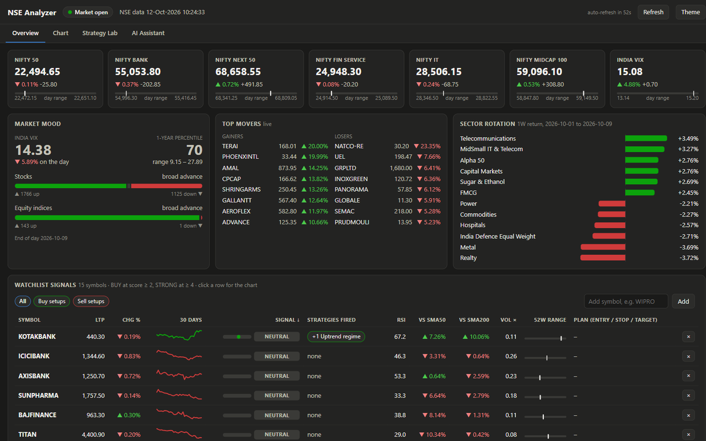
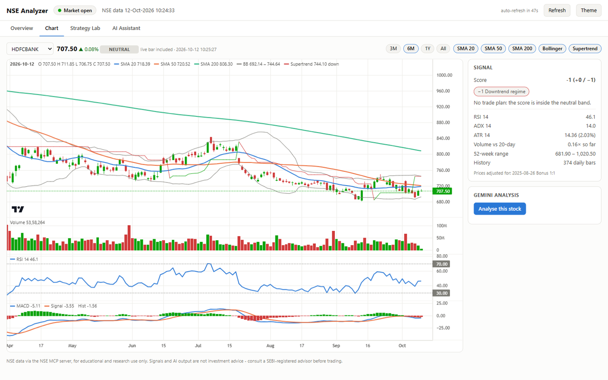
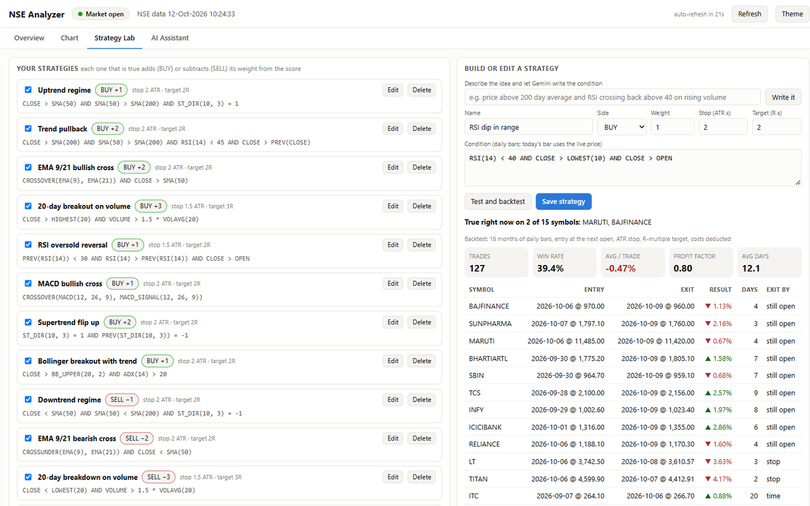

Market research for Indian equities, inside Google Sheets
NSE Analyzer is a free Google Sheets add-on. It pulls quotes and daily history from the NSE MCP servers, scores your watchlist against strategy rules you write, sizes a trade plan, and can add commentary from Google's Gemini models using your own API key.
Educational and research use only. Signals, backtests and AI output are not investment advice. Market data comes from the National Stock Exchange of India's MCP servers and is subject to NSE's terms. NSE Analyzer is an independent project and is not affiliated with or endorsed by NSE or Google.
What it does
| Feature | Details |
|---|---|
| Live data | Quotes, indices, top movers, market mood (VIX, breadth) and sector rotation, refreshed hourly in the sheet and every minute in the open dashboard. |
| Strategies | Write rules such as CLOSE > SMA(200) AND CROSSOVER(EMA(9), EMA(21)). Each true rule adds to or subtracts from a symbol's score. |
| Trade plan | Entry, ATR stop, target and position size from your capital and risk per trade. |
| Backtests | Test each rule on your watchlist's daily history, with costs deducted. |
| Dashboard | Candlestick chart with indicators, signal table and a strategy lab, in a dialog over your sheet. |
| AI (optional) | Per-stock analysis, a market brief and a chat assistant, using a Gemini API key you supply. |
Screenshots



Getting started
- Install NSE Analyzer from the Google Workspace Marketplace and open any Google Sheet.
- Choose Extensions > NSE Analyzer > Setup / repair sheets. This creates the Settings, Watchlist and Strategies sheets.
- Optional: AI (Gemini) > Set Gemini API key, with a key from Google AI Studio.
- Choose Open dashboard.